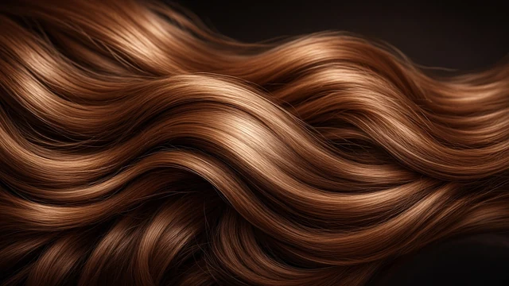
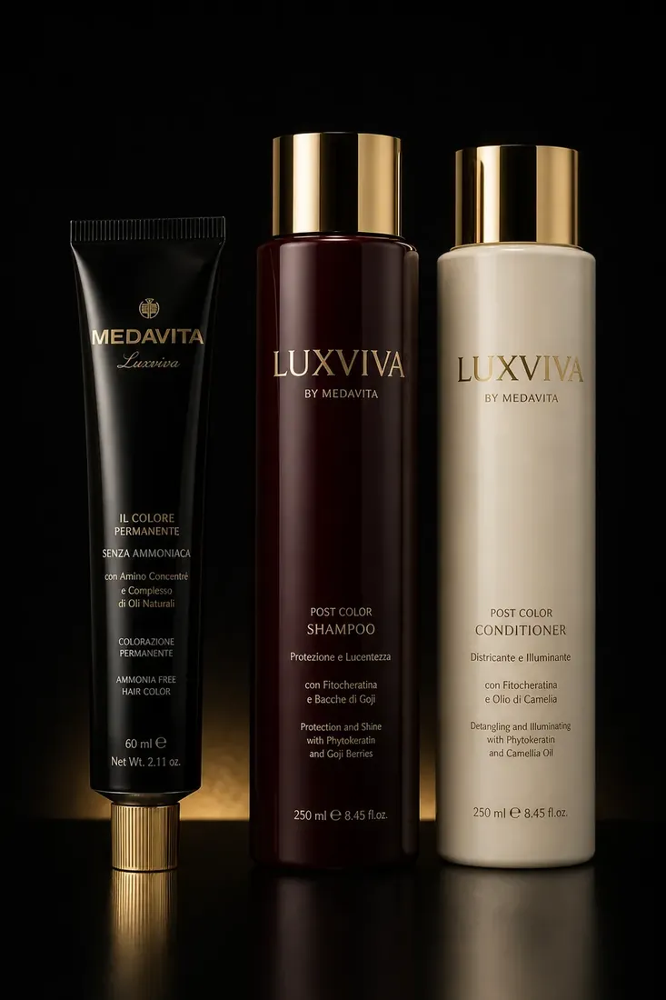

Šišanje i oblikovanje
Precizno šišanje prilagođeno obliku lica, tipu kose i željenom stilu.
- Žensko šišanjeod 15 €
- Muško šišanje14 €
- Dječje šišanje12 €
- Pranje i feniranjeod 15 €
- Oblikovanje frizureod 30 €

Naš stil.O nama
Na Trešnjevci smo otvorili vrata našeg salona u listopadu 2025. godine s jednom jednostavnom željom — stvoriti mjesto u kojem se klijenti osjećaju ugodno, saslušano i sigurno kada svoju kosu prepuste našim rukama.
Vjerujemo da dobra frizura nije samo lijep izgled nakon izlaska iz salona. Ona treba odgovarati vašem stilu, osobnosti i svakodnevnom životu. Zato svakom klijentu pristupamo individualno, od prvog razgovora pa sve do završnog oblikovanja.
Posebnu pažnju posvećujemo kvaliteti kose, preciznosti u radu i odabiru proizvoda, jer nam je važno da kosa ne izgleda samo lijepo — već da bude zdrava, njegovana i dugoročno kvalitetna.
Naš salon zamišljen je kao mjesto bez žurbe i pritiska, 1 na 1. Mjesto gdje možete odvojiti vrijeme za sebe, opustiti se i izaći s frizurom u kojoj se osjećate najbolje.
Iako smo novi salon na Trešnjevci, od prvog dana gradimo ono što nam je najvažnije — povjerenje, kvalitetne rezultate i dugoročne odnose s našim klijentima.
Hvala vam što ste dio naše priče. Veselimo se svakom novom susretu.
Usluge i cijenik
Svaka kosa je drugačija, zato svakoj usluzi pristupamo individualno. Prije svakog tretmana zajedno definiramo željeni rezultat i biramo ono što najbolje odgovara tvojoj kosi, stilu i svakodnevnim navikama.
Precizno šišanje prilagođeno obliku lica, tipu kose i željenom stilu.
Od suptilne promjene do potpune transformacije. Tehnike i proizvode biramo prema tvojoj kosi, uz očuvanje kvalitete.
Za prirodan, dimenzionalan i dugotrajan izgled. Tehniku prilagođavamo početnoj boji, kvaliteti kose i željenom rezultatu.
Tretmani koji kosi vraćaju mekoću, sjaj i njegovan izgled.
Frizure za trenutke u kojima želiš izgledati posebno.
Precizno oblikovanje koncem i bojanje obrva i trepavica.
Svaka cijena je za sebe — na nju se dodaje ostatak usluge ako se radi kombinacija. Iznos može ovisiti o dužini, gustoći i stanju kose te količini utrošenog materijala. Za zahtjevnije promjene i korekcije boje cijena se određuje nakon konzultacija.
Nisi sigurna što odabrati? Javi se — rado ćemo zajedno pronaći najbolju opciju za tvoju kosu.
Proizvodi
U našem salonu vjerujemo da lijepa kosa počinje pravilnim odabirom proizvoda. Radimo s profesionalnim brendovima Medavita i milk_shake, koje biramo prema potrebama svake kose.

Brend
Medavita je talijanski profesionalni brend posvećen njezi kose i vlasišta, s naglaskom na kvalitetu, učinkovitost i profesionalnu primjenu.
U ponudi su proizvodi i tretmani za različite potrebe — od hidratacije i regeneracije do njege obojene, oštećene i kemijski tretirane kose. Posebnu pažnju posvećujemo njezi vlasišta, jer zdrava kosa počinje od zdravog vlasišta.
Brend
Uz Medavitu koristimo i milk_shake, profesionalni brend poznat po kombinaciji profesionalne tehnologije, kvalitetnih sastojaka i ugodnog iskustva njege kose.
milk_shake proizvodi omogućuju nam da dodatno prilagodimo njegu različitim tipovima kose — od svakodnevne hidratacije i zaštite do njege nakon bojanja i kemijskih tretmana.
Ne vjerujemo u univerzalnu njegu. Svaka kosa ima svoje potrebe, zato ti nakon tretmana možemo preporučiti proizvode koji najbolje odgovaraju upravo tvojoj kosi. Profesionalna njega ne završava izlaskom iz salona — ona se nastavlja kod kuće.
Radovi
Frizure i boje iz salona. Klikni sliku za veći prikaz — više radova je na Instagramu.
Više radova na @frizerski__salon_m
Upoznaj mene
Iza salona stojim ja — frizerka kojoj je cilj svakoj klijentici i klijentu pružiti individualan pristup, kvalitetnu uslugu i osjećaj da je došla na mjesto gdje se može opustiti i prepustiti stručnim rukama.
Salon sam otvorila u listopadu 2025. godine kako bih stvorila prostor u kojem se mogu posvetiti svakoj klijentici, njezinoj kosi i željama — bez žurbe i bez univerzalnih rješenja.
Posebno volim raditi na promjenama boje, balayage tehnikama i njezi kose, ali najviše me veseli kada zajedno pronađemo frizuru i boju u kojoj se ti osjećaš najbolje.
Za njegu i profesionalni rad biram Medavitu i milk_shake, a svoje znanje kontinuirano nadograđujem kako bih mogla ponuditi što kvalitetniju uslugu.
Dođi kao klijentica, otiđi kao dio moje priče.
Recenzije
Prave Google recenzije. Salon je otvoren u listopadu 2025. — ostavi svoju, znači nam.
Jedno jako ugodno i kvalitetno šišanje. Frizerka je mlada profesionalna osoba koja sluša želje klijenta i pokušava ih ostvariti na najbolji mogući način. Tople preporuke.
Sve pohvale. Jako cijenim kad frizerka zaista sluša što hoću, i onda zaista to napravi. Bez previše komplikacija. Super, brzo, sve 5, sve pohvale.
Slatki mali salon u srcu Trešnjevke. Vlasnica je vrlo ljubazna i profesionalna. Vrlo sam zadovoljna uslugom :) tretman skidanja boje, stavljanje nove i šišanje te ujedno i njega kose se definitivno isplatilo! Tri sata su samo proletjela.
Frizura za svadbu prekrasno napravljena, izdrzala je cijeli dan i noc. Prezadovoljna!
Prvi put ovdje i samo riječi pohvale. Jako sam zadovoljna šišanjem i frizurom. Svaka preporuka!
Odlična, mlada i simpatična frizerka! Svaka preporuka!
Pitanja
Da. Termin je najbolje rezervirati unaprijed kako bismo mogli osigurati vrijeme koje vam najviše odgovara.
Termin možeš rezervirati pozivom na 091 947 4951 ili porukom (SMS, WhatsApp, Instagram).
Radim isključivo po dogovorenim terminima, ali ako imam slobodan termin, rado ću te primiti.
Vrijeme ovisi o odabranoj usluzi, dužini i gustoći kose te željenom rezultatu. Prilikom rezervacije možeš dobiti procjenu trajanja.
Cijene su navedene uz usluge. Kod zahtjevnijih usluga cijena može ovisiti o dužini, gustoći i stanju kose te količini potrebnog materijala.
Za većinu usluga nije potrebno posebno prati kosu prije dolaska. Ako je za određeni tretman potrebna posebna priprema, obavijestit ću te prilikom rezervacije.
Naravno. Molim te da o promjeni ili otkazivanju obavijestiš 24 sata prije, kako bismo termin mogli ponuditi drugom klijentu.
Kašnjenje do 10 minuta se tolerira. Nakon toga, ako raspored ne dopušta, nećemo moći primiti klijenta. Termin je potrebno otkazati 24 sata ranije, u suprotnom se plaća propušteni termin u cijelosti. Ako se termin otkaže unutar 12 sati prije, plaća se pola termina. Za nedolazak i nejavljanje termin se plaća u cijelosti.
Kod većih promjena najbolje je prvo napraviti konzultacije. Tako možemo procijeniti stanje kose, dogovoriti realan rezultat i odabrati najbolju tehniku.
U salonu radimo s profesionalnim brendovima Medavita i milk_shake, a proizvode biramo prema potrebama tvoje kose.
Naravno. Nakon tretmana možemo ti preporučiti proizvode koji odgovaraju tvojoj kosi i pomoći da rezultat iz salona što duže traje.
Informacije o lokaciji i kako doći pronaći ćeš u rubrici Kontakt. Ulaz je iz Badalićeve, pored kafića i kozmetičkog salona Luma.
Imaš još pitanja? Slobodno nam se javi — rado ćemo pomoći.
Rezervacije
Želiš novu frizuru, promjenu boje ili samo malo vremena za sebe? Javi mi se i dogovorit ćemo termin koji ti odgovara.
Termini su dostupni uz prethodnu rezervaciju.
Kontakt
Salon se nalazi na Trešnjevci. Ulaz je iz Badalićeve ulice, pored kafića i kozmetičkog salona Luma.